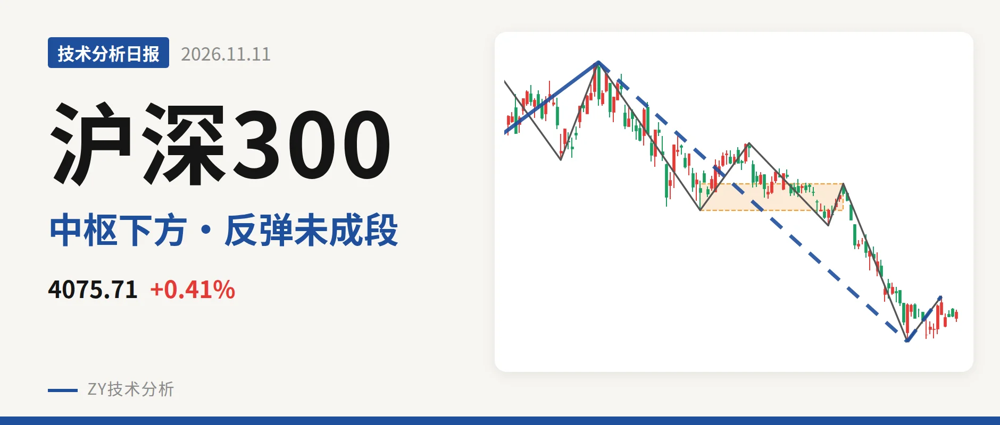
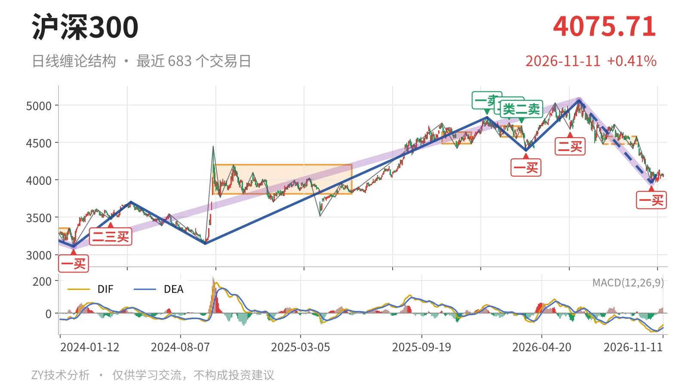
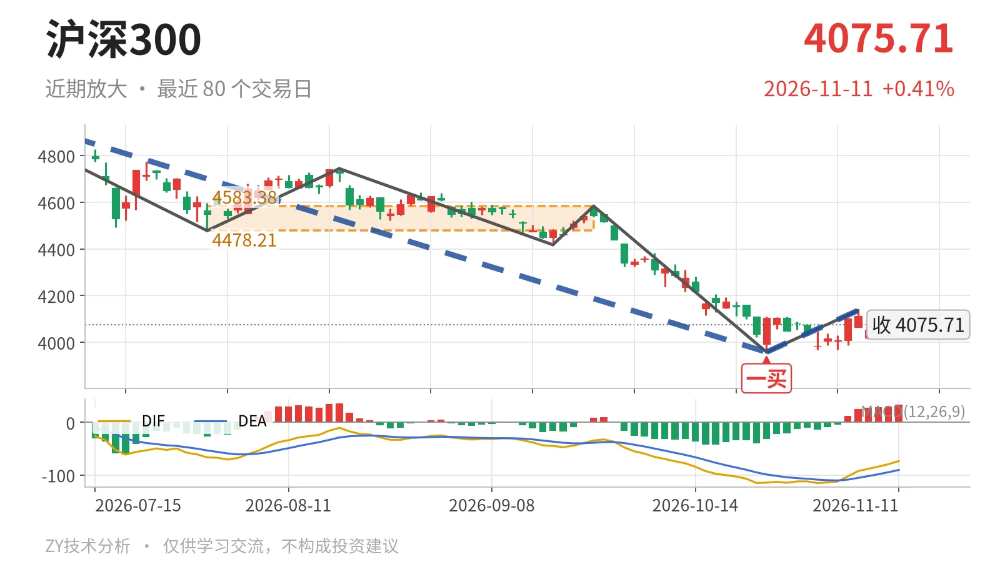

沪深300｜反弹未成段，4478点未收回

最近日线中枢 4478.21—4583.38点，收盘位于中枢之下
一句话：6月23日以来下跌段未结束，反弹未成线段，走势偏弱
🌊 走势结构：深调未结束，反弹只是一笔
更大级别从2024年2月2日的3108.35点涨至2026年6月23日的5064.27点，涨约63%，这段还看不到结束信号。6月23日以来的日线下跌线段已经跌约21.8%，从5064.27点落到3958.14点，内部有五笔，目前还在延续；10月23日至11月5日只是3958.14点到4136.80点的一笔反弹，不构成反向日线线段。因此当前结构按下跌段内部的反弹处理，而非对最近日线中枢的震荡。

📍 中枢与位置：跌破中枢下沿，中枢已下移
最新收盘4075.71点位于最近日线笔中枢4478.21—4583.38点下方，低于下沿约9.0%。该中枢形成于7月30日至9月22日，还未完成；此前2月3日至3月17日中枢区间为4578.21—4720.86点，两段中枢对比，上沿和下沿都下移。价格跌破最近中枢下沿后一直没能拉回，弱在没有反向线段承接，中枢下移后的下跌段依旧主导。
🎯 买卖点：日线一买已现，但未扭转线段
日线笔级别上，10月23日出现一买3958.14点，对应9月22日至10月23日下跌笔。10月23日至11月5日的反弹最高到4136.80点，还未形成反向线段，因此这个一买目前只带起一笔反弹，不代表日线线段转折。1月13日一卖4836.95点、2月25日二卖4766.56点、3月17日类二卖4720.86点一个比一个低，但3月24日一买4394.29点之后指数在6月23日创出5064.27点新高，这三个卖点已只对应日线笔级别。若后续再创调整新低，10月23日一买也会回到更小级别。

⚡ 背驰：绿柱面积不跟随，DIF仍弱
当前最需要看的是6月23日以来仍在延续的日线下跌线段。比较其中两段下跌笔：6月23日至7月30日下跌笔绿柱面积650，DIF低点-66.5；9月22日至10月23日下跌笔绿柱面积494，DIF低点-115.1。后者价格创出3958.14点新低，绿柱面积却小于前者，出现“新低不新弱”的量能衰减特征；但DIF低点由-66.5下移到-115.1，说明空头力度没有完全衰竭。最新DIF -73.5仍压在零轴下方，反弹还未改变零轴下方的弱势状态。
🔭 关键观察：4478点与3958点定义强弱
上方先看4478点附近，它是最近日线笔中枢下沿：反抽若回不到4478点上方，结构上更偏向于构成针对该中枢的三卖。下方看3958点附近：若再次跌破，10月23日一买对应的反弹结构就会被破坏，6月23日以来的下跌段继续延续。当前反弹未成线段、价格又在中枢下方，结构偏弱；重新站上4478点，下跌才更可能转为中枢扩展或进入稍强整理。
⚠️ 本文为基于公开行情数据的缠论技术结构记录，由程序自动计算并生成，仅供学习交流，不构成任何投资建议。市场有风险，投资需谨慎。